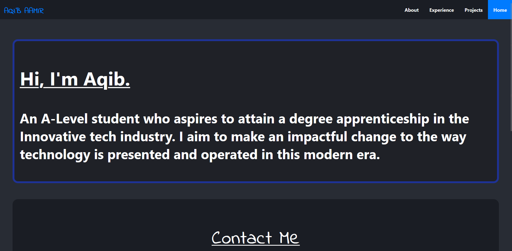
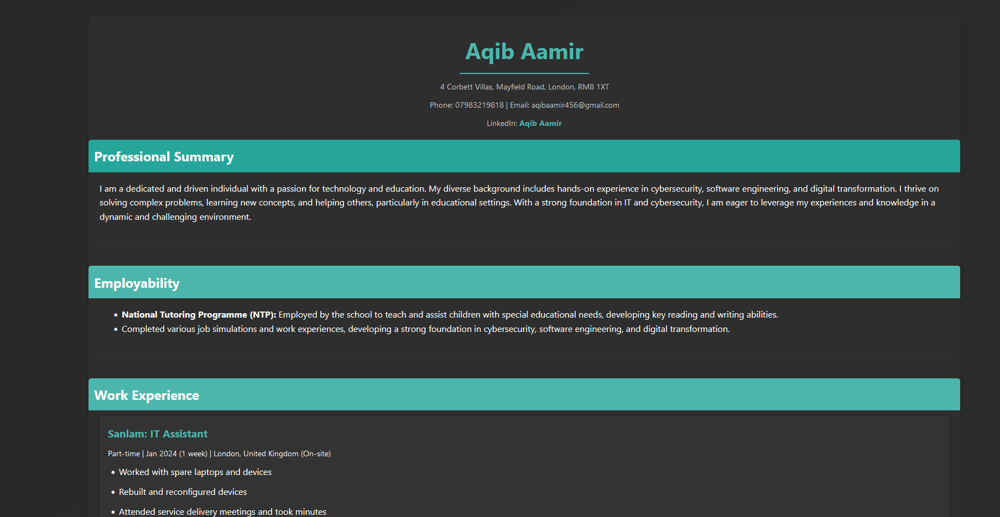

Professional Summary
I am a dedicated and driven individual with a passion for technology and education. My diverse background includes hands-on experience in cybersecurity, software engineering, and digital transformation. I thrive on solving complex problems, learning new concepts, and helping others, particularly in educational settings. With a strong foundation in IT and cybersecurity, I am eager to leverage my experiences and knowledge in a dynamic and challenging environment.
Work Experience
Sanlam: IT Assistant
Part-time | Jan 2024 (1 week) | London, United Kingdom (On-site)
- Worked with spare laptops and devices
- Rebuilt and reconfigured devices
- Attended service delivery meetings and took minutes
- Gained insight into how business IT functions
PwC: Cyber Security Consulting
Part-time | Apr 2024 (1 mo) | Remote
- Completed a job simulation focused on cybersecurity risk assessment
- Identified missing controls and associated risks, completed Test of Design and Operating Effectiveness documentation, and created a summary slide of findings
PwC: Cyber Security Work Simulation
Part-time | Mar 2024 (1 mo) | Hybrid
- Gained experience in integrated defense strategies through a job simulation
- Conducted risk assessments and formulated security recommendations, demonstrating proficiency in cybersecurity terminology, network segmentation, and firewall configuration
Santander: Digital Transformation Course
Part-time | Mar 2024 - Apr 2024 (2 mos) | London Area, United Kingdom (Hybrid)
- Learned the significance of technology adoption in digital transformation through five pillars: IoT, cloud computing, AI, cybersecurity, and blockchain
- Explored industry examples and the importance of future-proofing organizations by adapting to technological trends
J.P. Morgan Software Engineering Simulation
Part-time | Feb 2024 - Apr 2024 (3 mos) | Remote
- Set up a local development environment and fixed broken files in the repository
- Used JPMorgan Chase’s Perspective library to generate a live data feed graph for traders
J.P. Morgan Cyber Security Analyst Simulation
Part-time | Jan 2024 - Apr 2024 (4 mos) | Remote
- Gained insight into J.P. Morgan’s cybercrime ethics
- Learned how Python can be further developed for cyber attack prevention and application security fundamentals
Amazon: Verifying AI Knowledge & Digital Cloud Solutions
Part-time | Feb 2024 - Mar 2024 (2 mos) | Remote
- Gained insights into AI usage in various industries and fundamentals
- Explored how cloud computing and IoT are transforming industries and solving dilemmas
MasterCard Cyber Security Job Simulation
Part-time | Mar 2024 (1 mo) | Remote
- Learned key cybersecurity practices and current threats faced by Mastercard
- Identified phishing emails and associated threats
Accenture: Data Analytics and Visualisation
Part-time | Mar 2024 (1 mo) | Remote
- Completed a data analytics simulation, cleaned, modeled, and analyzed datasets
- Communicated insights through a PowerPoint deck and video presentation
Heathrow: Virtual IT Work Experience
Part-time | Feb 2024 - Mar 2024 (2 mos) | Remote
- Gained insight into managing customer data and the use of innovative technology at Heathrow
- Wrote a defense report on cybersecurity threats such as phishing and brute force attacks
Vodafone Innovators Virtual Work Experience
Part-time | Jan 2024 (1 mo) | Remote
- Learned about complex networks, IoT, and Vodafone’s employability ethos
Springpod: Software Development
Full-time | Jul 2023 - Aug 2023 (2 mos) | Remote
- Learned about modern OS capabilities, software development cycles, and various stages of development
Microsoft: Insight to Web Development
Part-time | Sep 2022 - Oct 2022 (2 mos) | Remote
- Learned core aspects of HTML and CSS in an extracurricular activity
Projects
P2P Web Application
Developed a unique peer-to-peer web application that allows users to send files to each other through a web browser. Utilised HTML, CSS, Python, and Java for the front-end and back-end development. Employed Flask and other Python modules to manage server-side operations and file transfers. Ensured secure and efficient file sharing between users in real-time.
GitHub Hosted Portfolio

Created a unique GitHub hosted portfolio using advanced CSS animations with keyframes. This portfolio showcases my projects and skills, featuring an elegant and dynamic user interface. You can view a preview of the website here This was the first website I had created after learing Html And CSS.
Virtual CV

Created a unique virtual CV hosted on Netlify. This virtual CV showcases my professional journey, skills, projects, and experiences in an interactive and visually engaging format. It serves as a comprehensive digital portfolio, demonstrating my technical proficiency and career achievements to potential employers and collaborators. The colour scheme has been selected carefully to compliment the aesthetics of the animated background